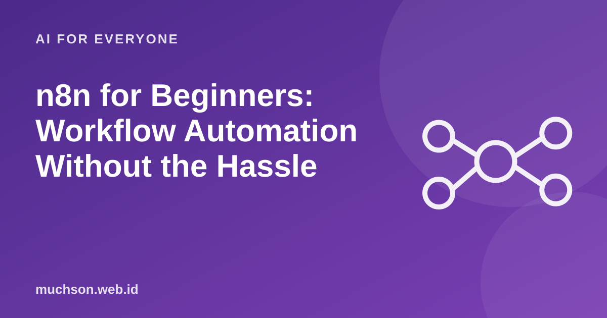

Home › Articles › AI for Everyone
AI for Everyonen8n for Beginners: Workflow Automation Without the Hassle
Moving data from one app to another by hand wastes time and invites mistakes. n8n lets you lay out the flow visually: connect the boxes, run it, and the repetitive work runs itself.

Basic concepts
Text description of the diagram
- Trigger: the event that starts the flow
- Node: one step: read, change, send
- Condition: branch if A or B
- Result: data saved or sent
- Trigger: a form is submitted, an email arrives, a daily schedule, or a webhook.
- Node: one step, for example read a spreadsheet, send a message, call an API or change a data format.
- Credential: access permission to a service, stored separately from the flow.
- Execution: a record of each time the flow runs, useful for finding the cause of a failure.
Three useful example workflows
When does n8n fit?
Early tips
FAQ
Is n8n free?
There are self-hosted options and paid cloud services. Licence terms and prices can change, so check the official site.
Do I need to know how to code?
Not for simple flows. For custom logic, being able to write a little code helps a lot.
How is n8n different from Zapier or Make?
All three are automation platforms. They differ in pricing model, self-hosting options, flexibility and integration ecosystem. Choose by need and budget.